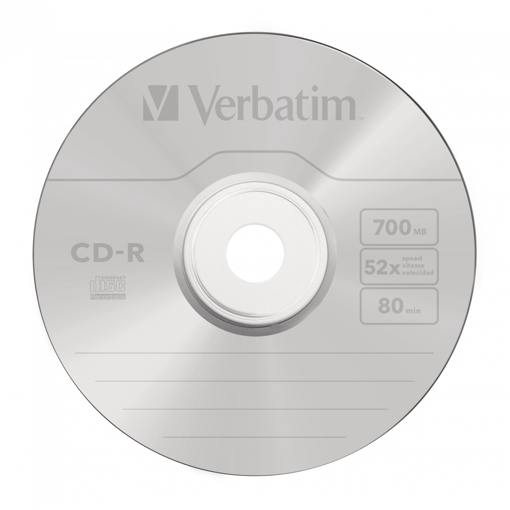

Ovladače zařízení. Speciální programy, které zajišťují komunikaci OS s určitým technickým vybavením. Bez potřebného ovladače nemůže zařízení správně fungovat. Standardní ovladače pro běžná zařízení, jakými jsou flash disk, myš, klávesnice nebo digitální fotoaparáty, bývají součástí moderních OS. Instalaci zařízení ve Windows usnadňuje standard Plug and Play, který zajistí automatickou detekci nově připojeného hardware a případně i automatické vyhledání potřebného ovladače. Není-li driver nalezen přímo v OS, musí být použit externí instalátor ovladače z disku dodaného se zařízením (např. z instalačního CD k tiskárně), nebo stažený z internetových stránek, nejlépe přímo od výrobce. Nevhodně zvolený ovladač může v krajním případě způsobit nefunkčnost zařízení, někdy i celého OS.
